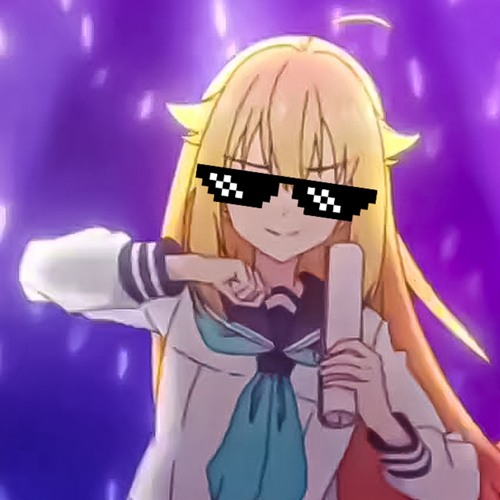
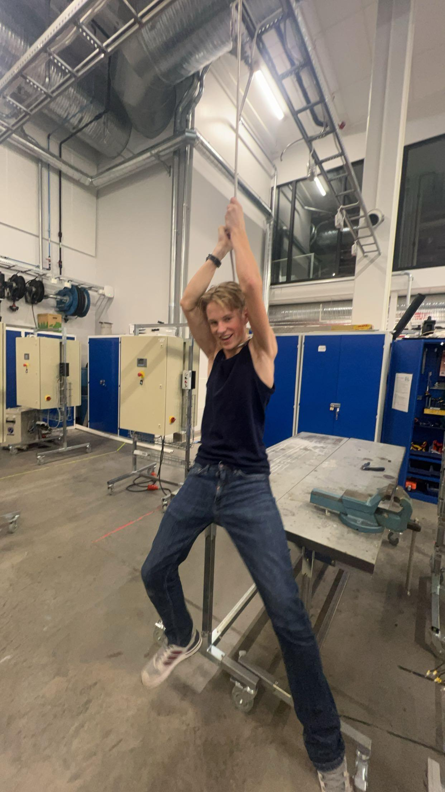

Velkommen til robotikklinjen!
Vi er et 3-årsløp med læring i elektro og automasjon med studiekompetanse.
Hva er det vi gjør?
På en størrelse på 18 elever i en klasse jobber vi med elektriske kretser, lager nettverk, jobber med robotarmer og automasjon.
Fra og med skoleår 2025/2026 vil det være 2 klasser på robotikk. Det betyr at du som skal søke vgs har nå større sjanse på å komme inn på robotikklinja!
Timeplan
| Vg1 | Vg2 | Vg3 |
|---|---|---|
| -Matematikk 1T | -Matematikk R1 | -Matematikk R2 |
| -Norsk | -Norsk | -Norsk |
| -Naturfag EL | -Elenergisystemer | -Naturfag Påbygg |
| -Engelsk | -Fysikk 1 | -Fysikk 2 |
| -Kroppsøving | -Kroppsøving | -Kroppsøving |
| -Elektroniske kretser og nettverk | -Automasjon | -Historie |
| -Yrkesfaglig fordypning | -Yrkesfaglig fordypning | |
| -Elenergi |
uytredjkkkkkk
Utplassering
I løpet av vg2 kommer elevene til å få i oppdrag å utplassere seg en hel uke i høst- og vår termin. Dette er for å la dem utforske hvordan det er å jobbe i bedrift og utforske deres fremtidige muligheter. Deretter i vg3 utplasserer de seg en dag i uka hele skoleåret. Hva de utplasserer seg i er opptil elevene.
 Realfagskompetanse
- Fysikk 1 og 2
- Matematikk R1 og R2
Litt om elektro-fagene
Gjennom robotikklinjen vil du jobbe både teoretisk og praktisk. I elektrofagene som elenergi og automasjon vil du skrive dokumentasjoner, bygge anlegg eller elektroniske kretser.
Framtidige utdanninger
Til videre studier er det mulig å ta en bachelor eller mastergrad i kybernetikk og robotteknologi.I tillegg får du realfag med studiekompetanse som vil gjøre at du kan søke på nesten alle studier tilgjengelige.
RoboCompetition
Siden skoleår 2022/2023 har det blitt arrangert RoboCompetition. Først ble det kalt Robocup og etter hvert utvkilet til en konkurranse (RoboCompetition) der en vinner blir kåret og får premie. I år er det Norge, Sveits, Nederland, Danmark, Tyskland og potensielt Tyrkia og Italia, som er med i denne konkurransen sponset av ------------.
RoboComp varer i 1 uke. Ulike land arrangerer til ulike tider. Lagene møter hverandre elektronisk på forkant av konkurransen for å bli kjent med hverandre. På konkurransen har de 4 dager med øving med robotene, problemløsning og å løse konkurranse-delen. I tillegg til dette vil de også gjøre sosiale aktiviteter for å bånde sammen. Alt det de har gjort presenterer de foran alle lagene og eventuelt andre elever og ansatte på fredag. Under presentasjonene deres vil de bli vurdert av dommere og de vil kåre en vinner, men alt i alt er alle vinnere.
Sosialt
I tillegg til å jobbe hardt med elektronikk og vanlig studie har vi også sosiale ting på robotikk. Blant annet har vi vært på bowling, paintball, klatrepark, stranda, teater og mer. Disse skjer noen ganger knyttet til undervisningen og ellers bare for å ha det gøy!